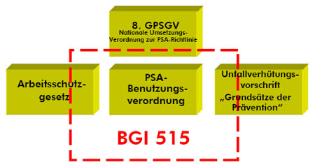

Berufsgenossenschaftliche Informationen für Sicherheit und Gesundheit bei der Arbeit (BG-Informationen) sind Zusammenstellungen bzw. Konkretisierungen von Inhalten, z.B. aus
Die branchenübergreifenden Ausführungen dieser BG-Information beinhalten im Zusammenhang mit persönlichen Schutzausrüstungen die wichtigsten Vorschriften des Arbeitsschutzgesetzes (ArbSchG), der Verordnung über Sicherheit und Gesundheitsschutz bei der Benutzung persönlicher Schutzausrüstungen bei der Arbeit (PSA-Benutzungsverordnung – PSA-BV) sowie der Unfallverhütungsvorschrift „Grundsätze der Prävention“ (BGV A1); die anzuwendenden Arbeitsschutzvorschriften sind den jeweiligen Texten vorangestellt, wobei die unterstrichenen Vorschriftentexte zur Verdeutlichung durch Fragen und Antworten konkretisiert oder erläutert werden.
In dieser BG-Information werden insofern alle für persönliche Schutzausrüstungen einschlägigen Bestimmungen aus dem Arbeitsschutzgesetz, der PSA-Benutzungsverordnung sowie der Unfallverhütungsvorschrift „Grundsätze der Prävention“ (BGV A1) vollständig aufgegriffen und in einem logischen, praxisgerechten Ablauf zitiert und erläutert. Dabei wird auch die Achte Verordnung zum Geräte- und Produktsicherheitsgesetz (8. GPSGV) berücksichtigt.

Sollten darüber hinaus gehende Fragen zur Benutzung von persönlichen Schutzausrüstungen bestehen, wird auf den Internetauftritt des Fachausschusses „Persönliche Schutzausrüstungen“ http://www.dguv.de/fb-psa/de/index.jsp verwiesen. Dort befindet sich beispielsweise auch eine Leitlinie als Praxishilfe zur Durchführung der Risikobeurteilung von Arbeiten mit Absturzgefahr unter Verwendung von persönlichen Schutzausrüstungen gegen Absturz bzw. zum Retten aus Höhen und Tiefen.